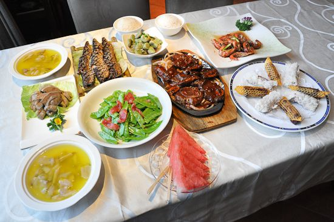

详细页面
传统的浙江菜系由杭州菜、宁波菜、绍兴菜、温州菜共同构成，而杭州菜则为浙菜的领军。江浙一带，鱼米丰润，本地人民对于饮食之道颇为讲究。 杭州菜讲究轻油、轻浆、清淡鲜嫩的口味，历史上分为“湖上”、“城厢”两个流派。前者用料以鱼虾和禽类为主，擅长生炒、清炖、嫩熘等技法，讲究清、鲜、脆、嫩的口味，注重保留原汁原味。后者用料以肉类居多，烹调方法以蒸、烩、氽、烧为主，讲究轻油、轻浆、清淡鲜嫩的口味，注重鲜咸合一。
